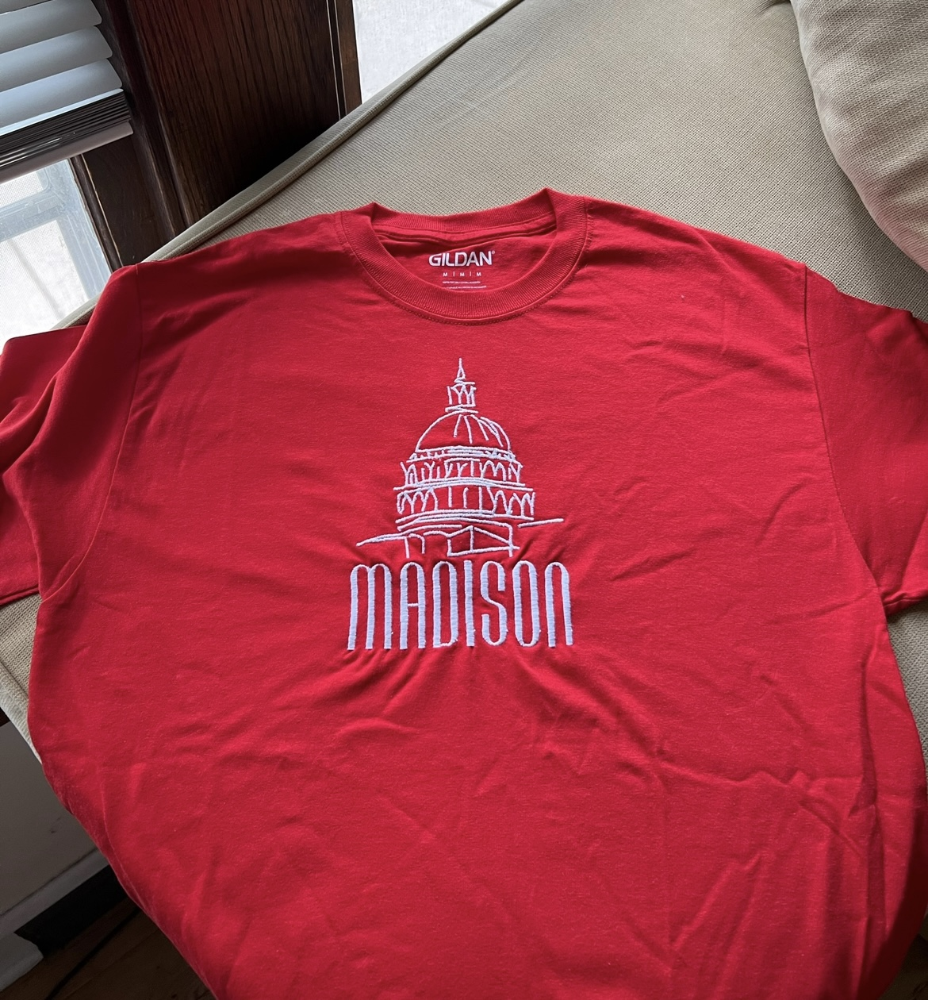
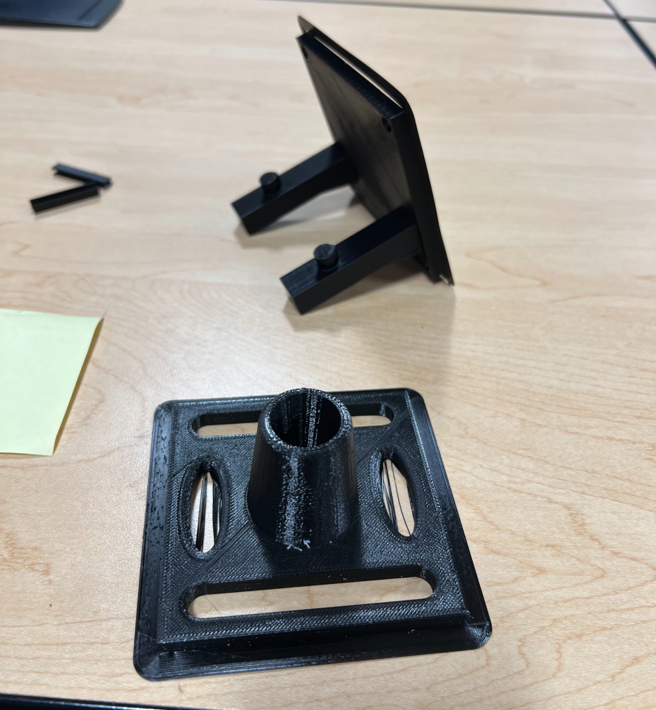
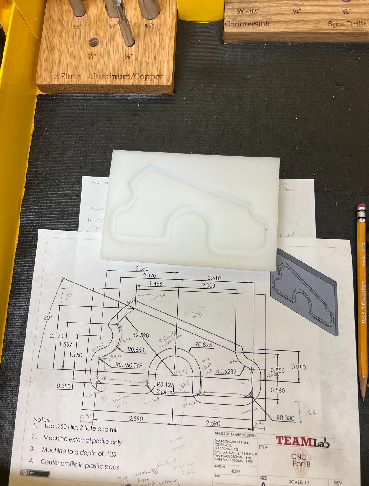

About me
Hello! My name is Santiago Barquin and I recently graduated from the University of Wisconsin-Madison with a degree in Mechanical Engineering

Hello! My name is Santiago Barquin and I recently graduated from the University of Wisconsin-Madison with a degree in Mechanical Engineering
Cool stuff I have worked on.
Focused on manufacturing and redesigning a thermo-mechanical device.


Arduino Tinkering. Going through Arduino Tutorials to expose myself to a different type of coding and the possibilites that come with the sotfware and hardware.

Analyzed the thermal process of a "sprained" ankle 2-D model surbmerged in an ice bath to determine the effectiveness of the treatment in Ansys.
Project where I used a sewing machine to sew various Madison designs on shirts.

Sample of Code used in making this website.

3-D printed Airfoil used for Senior Design Presentations. Click on photo for our poster and more information.
3-D printed Febreeze holder and wall mount designed in SolidWorks.

Slider Crank Concept Test Fixture designed in Creo for vaporizer integrety testing while at GE.
Completed part and training for ability to use mill with CNC capabilities.
Nashville, TN
{kind=link}